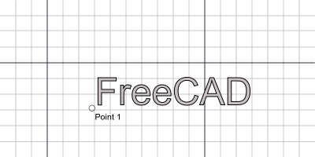
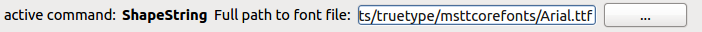

Draft ShapeString
|
| Lokalizacja menu
|
| Draft -> ShapeString
|
| Workbenches
|
| Draft, Arch
|
| Domyślny skrót
|
| S S
|
| Zobacz także
|
| żaden
|
|
Description
The ShapeString tool inserts a compound shape representing a text string at a given point in the current document. Text height, tracking and font can be specified.

How to use
- Press the Draft Shape from text ... button, or press S then S keys
- Click a point on the 3D view, or type a coordinate
- Enter the desired text, press ENTER
- Enter the desired size, press ENTER
- Enter the desired tracking, press ENTER
- Press ENTER to accept the displayed font file, or,
- Press ... to select a font file.
Options
- To enter coordinates manually, simply enter the numbers, then press ENTER between each X, Y and Z component.
- Pressing ESC will cancel the operation.
- You can set a default font file in Draft/Prefences.
Properties
- DATAPosition: The base point of the compound shape
- DATAString: The contents of the text string
- DATASize: The height of the letters in FC units
- DATATracking: The inter-character spacing in FC units
- DATAFont File: The font definition file used to draw the string
Scripting
The ShapeString tool can by used in macros and from the python console by using the following function:
makeShapeString(String,FontFile,[Size],[Tracking])
- Turns a text string into a Compound Shape using a specified font.
Example:
import FreeCAD,Draft
Draft.makeShapeString("This is a sample text",
"/usr/share/fonts/truetype/msttcorefonts/Arial.ttf",
200.0,10)
Selecting A Font

ShapeString uses the internal geometry of a font to make FreeCAD shapes. To do this it must read the actual font file (*.tff, etc). If the Font Selection box is empty, you must type the full path to the font file or use ... to select a font file.
Limitations
- This tool is not available in FreeCAD versions anterior to 0.14
- TrueType(*.ttf), OpenType(*.otf) and Type1(*.pfb) font files are supported.
- Very small text heights may result in deformed character glyphs due to loss of detail in scaling.
- The current version is limited to left-to-right layouts on a horizontal baseline.
- For creating curved text you can use the macro Circular Text
Tutorials
{kind=link}
{kind=link}
{kind=link}
{kind=link}
{kind=link}